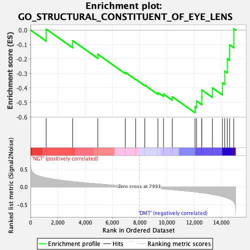
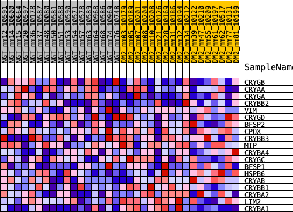
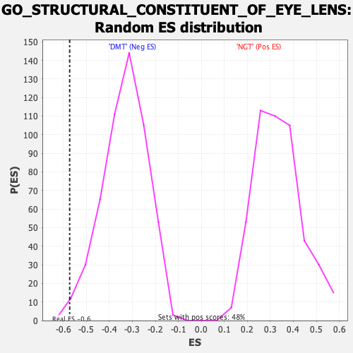

| | | Dataset | Diabetes_collapsed_symbols.Diabetes.cls#NGT_versus_DMT |
| Phenotype | Diabetes.cls#NGT_versus_DMT |
| Upregulated in class | DMT |
| GeneSet | GO_STRUCTURAL_CONSTITUENT_OF_EYE_LENS |
| Enrichment Score (ES) | -0.5723582 |
| Normalized Enrichment Score (NES) | -1.7195077 |
| Nominal p-value | 0.005725191 |
| FDR q-value | 1.0 |
| FWER p-Value | 0.97 |
Table: GSEA Results Summary

Fig 1: Enrichment plot: GO_STRUCTURAL_CONSTITUENT_OF_EYE_LENS
Profile of the Running ES Score & Positions of GeneSet Members on the Rank Ordered List
| PROBE | DESCRIPTION
(from dataset) | GENE SYMBOL | GENE_TITLE | RANK IN GENE LIST | RANK METRIC SCORE | RUNNING ES | CORE ENRICHMENT | | 1 | CRYGB | na | | | 1147 | 0.260 | 0.0070 | No |
| 2 | CRYAA | na | | | 3088 | 0.153 | -0.0730 | No |
| 3 | CRYGA | na | | | 4940 | 0.088 | -0.1679 | No |
| 4 | CRYBB2 | na | | | 6952 | 0.029 | -0.2923 | No |
| 5 | VIM | na | | | 7714 | 0.008 | -0.3404 | No |
| 6 | CRYGD | na | | | 8386 | -0.012 | -0.3814 | No |
| 7 | BFSP2 | na | | | 9347 | -0.040 | -0.4323 | No |
| 8 | CPOX | na | | | 9758 | -0.052 | -0.4428 | No |
| 9 | CRYBB3 | na | | | 10398 | -0.074 | -0.4614 | No |
| 10 | MIP | na | | | 12067 | -0.136 | -0.5289 | Yes |
| 11 | CRYBA4 | na | | | 12180 | -0.142 | -0.4910 | Yes |
| 12 | CRYGC | na | | | 12559 | -0.159 | -0.4652 | Yes |
| 13 | BFSP1 | na | | | 12567 | -0.159 | -0.4146 | Yes |
| 14 | HSPB6 | na | | | 13344 | -0.206 | -0.4003 | Yes |
| 15 | CRYAB | na | | | 14079 | -0.264 | -0.3644 | Yes |
| 16 | CRYBB1 | na | | | 14246 | -0.285 | -0.2843 | Yes |
| 17 | CRYBA2 | na | | | 14435 | -0.308 | -0.1981 | Yes |
| 18 | LIM2 | na | | | 14603 | -0.335 | -0.1020 | Yes |
| 19 | CRYBA1 | na | | | 14911 | -0.412 | 0.0096 | Yes |
Table: GSEA details [plain text format]

Fig 2: GO_STRUCTURAL_CONSTITUENT_OF_EYE_LENS
Blue-Pink O' Gram in the Space of the Analyzed GeneSet

Fig 3: GO_STRUCTURAL_CONSTITUENT_OF_EYE_LENS: Random ES distribution
Gene set null distribution of ES for GO_STRUCTURAL_CONSTITUENT_OF_EYE_LENS